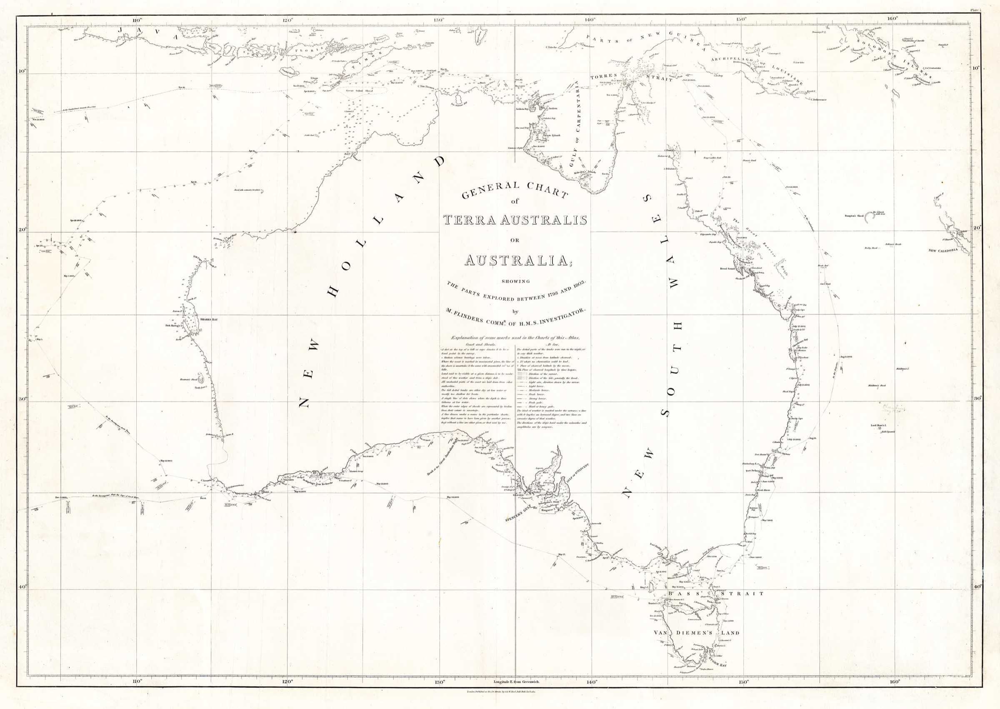

Objectives and Methodology 
Aims, Method, and Scope
Like its companion site devoted to the French expeditions, Flinders Place Names pursues three interrelated aims: documentary, interpretive and educational.

1. Documentary: an evidence-based record
The site brings together, in one consolidated corpus, the coastal features named by Matthew Flinders between 1795 and 1803: some 350 names, from his first boat voyages with George Bass to the circumnavigation in the Investigator.
Each name is identified by a code, located by its modern coordinates, and set against its present Australian form. The research rests on Flinders’s own writings — his published narrative, his logbooks and his charts — read alongside the official gazetteers.
2. Interpretive: reading names as historical documents
Each place name is treated as a trace of the moment it was given. Entries examine:
- the circumstances of naming: date, ship, position and the state of the survey
- the person, place, event or feature it commemorates
- what Flinders himself wrote about it, quoted from the narrative or the log
Naming is never neutral. Flinders named a coast that Aboriginal peoples had long since named in their own languages; where those names are known, the site records them. It also recalls the part played by intermediaries such as Bungaree.
3. Educational: access to the sources
The site is meant for researchers, teachers, students and anyone curious about the coast. The interactive map links each name to its position, the ship’s route to the day’s journal, and the 1814 chart to the modern coastline, so that the reader can check every statement against the sources.
Method
Building the corpus
The names were drawn from the narrative and atlas of A Voyage to Terra Australis and from Flinders’s earlier Observations (1801), then checked against the Composite Gazetteer of Australia. Each entry is classified by campaign (Tom Thumb, Francis, Norfolk, Investigator) and by type of name.
Reconstructing the routes
Flinders gives his position only at intervals. The track of the Investigator, the Porpoise and the Cumberland was rebuilt from the noon positions of the narrative, then adjusted on the noon points engraved on his general chart. Days between two known positions are estimated by interpolation, and marked as such.
The journals
The narrative and the logbook are given day by day, in the original English and in a French translation produced for the site and flagged as such.
Sources
Primary sources
- Matthew Flinders, A Voyage to Terra Australis, London, G. & W. Nicol, 1814, 2 vols and atlas — Project Gutenberg Australia
- Matthew Flinders, journal on HMS Investigator, vols 1 and 2 (1801–1803) — State Library of New South Wales
- Matthew Flinders, Observations on the Coasts of Van Diemen’s Land, on Bass’s Strait and its Islands, London, 1801
- Matthew Flinders, General Chart of Terra Australis or Australia, 1814 — David Rumsey Map Collection
Reference works and institutions
- The Flinders Papers, National Maritime Museum, Greenwich — https://www.rmg.co.uk/
- National Library of Australia (TROVE) — https://trove.nla.gov.au/
- Composite Gazetteer of Australia (ICSM) — https://placenames.fsdf.org.au/
- South Australian Maritime Museum, Encounter 1802–2002 — https://maritime.history.sa.gov.au/
Objectifs et méthodologie
Objectifs, méthode et périmètre
Comme le site jumeau consacré aux expéditions françaises, Flinders Place Names poursuit trois objectifs liés : documentaire, interprétatif et pédagogique.
1. Documentaire : une référence fondée sur les sources
Le site réunit en un corpus unique les lieux côtiers nommés par Matthew Flinders entre 1795 et 1803 : près de 350 noms, de ses premières reconnaissances en canot avec George Bass jusqu’à la circumnavigation de l’Investigator.
Chaque nom reçoit un code, est situé par ses coordonnées actuelles et rapproché de sa forme australienne d’aujourd’hui. La recherche s’appuie sur les écrits de Flinders lui-même — son récit publié, ses journaux de bord et ses cartes —, confrontés aux répertoires toponymiques officiels.
2. Interprétatif : lire les noms comme des documents
Chaque toponyme est traité comme la trace du moment où il fut donné. Les notices examinent :
- les circonstances de la dénomination : date, navire, position et état du levé
- la personne, le lieu, l’événement ou le relief commémoré
- ce qu’en écrit Flinders lui-même, cité d’après le récit ou le journal
Nommer n’est jamais neutre. Flinders a nommé une côte que les peuples aborigènes nommaient depuis longtemps dans leurs propres langues ; lorsque ces noms sont connus, le site les mentionne. Il rappelle aussi le rôle d’intermédiaires comme Bungaree.
3. Pédagogique : l’accès aux sources
Le site s’adresse aux chercheurs, aux enseignants, aux étudiants et à tous les curieux du littoral. La carte interactive relie chaque nom à sa position, la route du navire au journal du jour, et la carte de 1814 au trait de côte actuel, afin que chacun puisse vérifier chaque affirmation sur pièces.
Méthode
Constitution du corpus
Les noms ont été relevés dans le récit et l’atlas de A Voyage to Terra Australis et dans les Observations de 1801, puis rapprochés de la Composite Gazetteer of Australia. Chaque notice est classée par campagne (Tom Thumb, Francis, Norfolk, Investigator) et par type de nom.
Reconstitution des routes
Flinders ne donne sa position que de loin en loin. La route de l’Investigator, du Porpoise et de la Cumberland a été reconstituée à partir des positions de midi du récit, puis calée sur les points de midi gravés sur sa carte générale. Les journées comprises entre deux positions connues sont estimées par interpolation, et signalées comme telles.
Les journaux
Le récit et le journal de navigation sont donnés jour par jour, dans l’original anglais et dans une traduction française réalisée pour le site et signalée comme telle.
Sources
Sources primaires
- Matthew Flinders, A Voyage to Terra Australis, Londres, G. & W. Nicol, 1814, 2 vol. et atlas — Project Gutenberg Australia
- Matthew Flinders, journal du HMS Investigator, vol. 1 et 2 (1801-1803) — State Library of New South Wales
- Matthew Flinders, Observations on the Coasts of Van Diemen’s Land, on Bass’s Strait and its Islands, Londres, 1801
- Matthew Flinders, General Chart of Terra Australis or Australia, 1814 — David Rumsey Map Collection
Ouvrages de référence et institutions
- Les Flinders Papers, National Maritime Museum, Greenwich — https://www.rmg.co.uk/
- National Library of Australia (TROVE) — https://trove.nla.gov.au/
- Composite Gazetteer of Australia (ICSM) — https://placenames.fsdf.org.au/
- South Australian Maritime Museum, Encounter 1802-2002 — https://maritime.history.sa.gov.au/